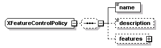
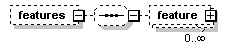
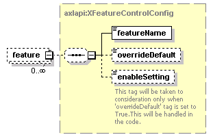

| diagram |  | ||
| namespace | http://www.cisco.com/AXL/API/10.5 | ||
| children | name description features | ||
| used by |
|
||
| source | <xsd:complexType name="XFeatureControlPolicy"> <xsd:sequence minOccurs="0"> <xsd:element name="name" type="axlapi:String50" nillable="false" minOccurs="1" maxOccurs="1"/> <xsd:element name="description" type="axlapi:String100" nillable="false" minOccurs="0" maxOccurs="1"/> <xsd:element name="features" minOccurs="0" maxOccurs="1"> <xsd:complexType> <xsd:sequence minOccurs="0"> <xsd:element name="feature" type="axlapi:XFeatureControlConfig" minOccurs="0" maxOccurs="unbounded"/> </xsd:sequence> </xsd:complexType> </xsd:element> </xsd:sequence> </xsd:complexType> |
element XFeatureControlPolicy/name
| diagram | |||||||
| type | axlapi:String50 | ||||||
| properties |
|
||||||
| facets |
|
||||||
| source | <xsd:element name="name" type="axlapi:String50" nillable="false" minOccurs="1" maxOccurs="1"/> |
element XFeatureControlPolicy/description
| diagram |  |
||||||||
| type | axlapi:String100 | ||||||||
| properties |
|
||||||||
| facets |
|
||||||||
| source | <xsd:element name="description" type="axlapi:String100" nillable="false" minOccurs="0" maxOccurs="1"/> |
element XFeatureControlPolicy/features
| diagram |  | ||||||
| properties |
|
||||||
| children | feature | ||||||
| source | <xsd:element name="features" minOccurs="0" maxOccurs="1"> <xsd:complexType> <xsd:sequence minOccurs="0"> <xsd:element name="feature" type="axlapi:XFeatureControlConfig" minOccurs="0" maxOccurs="unbounded"/> </xsd:sequence> </xsd:complexType> </xsd:element> |
element XFeatureControlPolicy/features/feature
| diagram |  | ||||||
| type | axlapi:XFeatureControlConfig | ||||||
| properties |
|
||||||
| children | featureName overrideDefault enableSetting | ||||||
| source | <xsd:element name="feature" type="axlapi:XFeatureControlConfig" minOccurs="0" maxOccurs="unbounded"/> |
XML Schema documentation generated by XMLSpy Schema Editor http://www.altova.com/xmlspy